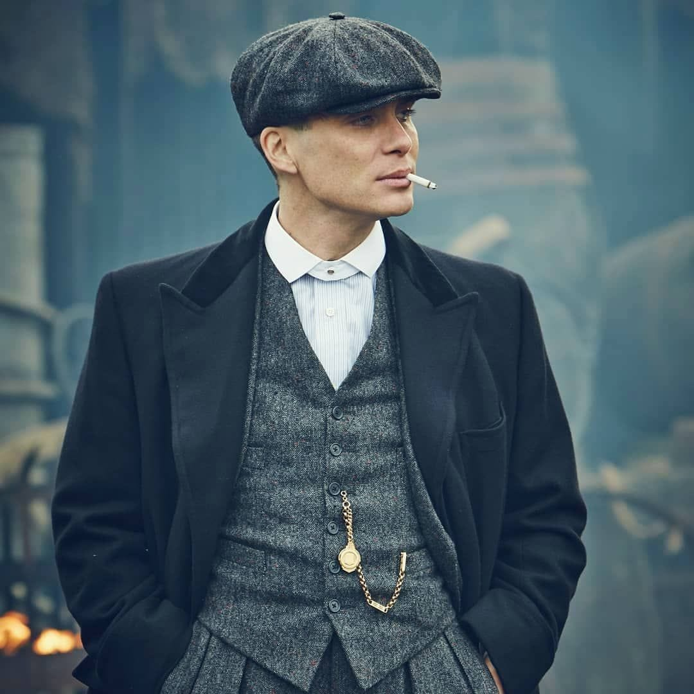

Thomas Shelby

Thomas Michael Shelby OBE DCM MM is a fictional character and the main protagonist of the British period crime drama Peaky Blinders. He is played by Irish actor Cillian Murphy, who has won two Irish Film & Television Awards and two National Television Awards for his portrayal of Shelby. The character has received critical acclaim.
Director Steven Knight cast Cillian Murphy for the role of Tommy Shelby. The character is introduced as a First World War veteran from a family with Romani ancestry, whose criminal enterprise is centred in Birmingham. The narrative begins in 1919, and largely revolves around Shelby's romance with Grace Burgess and his conflict with Inspector Campbell. As the series progresses, Shelby's relationship with mob boss Alfie Solomons is a key element in many of the storylines.